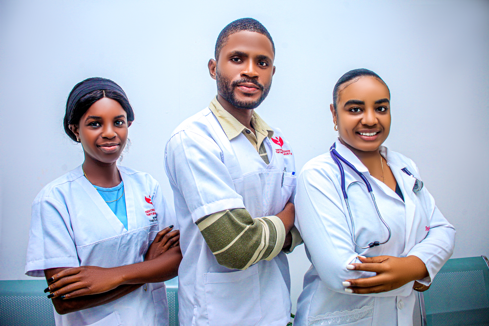
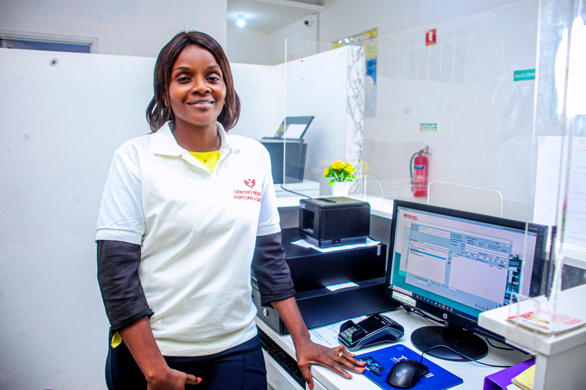

Sobre Nós
O Centro Médico Fortuna & Gueta é uma instituição dedicada à promoção da saúde e do bem-estar, oferecendo serviços médicos com qualidade, profissionalismo e atendimento humanizado

Missão
O centro Médico Fortuna & Gueta é uma instituição dedicada à promoção da saúde e do bem-estar, oferecendo serviços médicos com qualidade, profissionalismo e atendimento humanizado.
Visão
Ser uma referência em serviços de saúde e medicina ocupacional em Angola, reconhecida pela excelência, inovação e compromisso com a vida.
Valores
- Ética e transparência
- Ética e transparência
- Humanização no atendimento
- Profissionalismo
- Qualidade e segurança
- Respeito pelo paciente
O Centro Médico Fortuna & Gueta nasceu em 2023, fruto de uma visão de criar uma instituição de saúde
comprometida com a promoção da saúde e do bem-estar da comunidade. Desde a sua fundação, a clínica assumiu o
compromisso de prestar serviços médicos com qualidade, profissionalismo e, acima de tudo, um atendimento
verdadeiramente humanizado.
Ao longo destes três anos, o Centro Médico Fortuna & Gueta tem construído a sua trajetória com base em
valores como ética, transparência, respeito pelo paciente, qualidade e segurança. Cada consulta, exame e
atendimento representa uma oportunidade de colocar as pessoas no centro do cuidado e contribuir para uma
vida mais saudável.
Hoje, ao celebrar três anos de existência, continuamos a olhar para o futuro com o mesmo propósito que
esteve na origem da nossa criação: crescer, inovar e tornar-nos uma referência em serviços de saúde e
medicina ocupacional em Angola, mantendo sempre o compromisso com a vida e com aqueles que confiam em nós.

Há 3 anos, começámos com um propósito: cuidar de pessoas com qualidade, profissionalismo e humanidade. Hoje, continuamos
a crescer com o mesmo compromisso — colocar a saúde e o bem-estar de cada paciente no centro de tudo o que fazemos.
a crescer com o mesmo compromisso — colocar a saúde e o bem-estar de cada paciente no centro de tudo o que fazemos.

